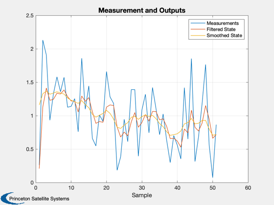
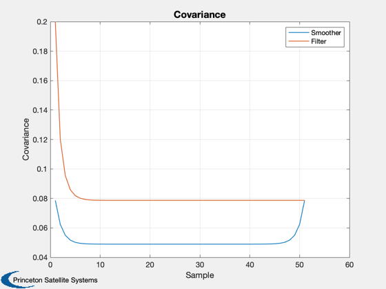
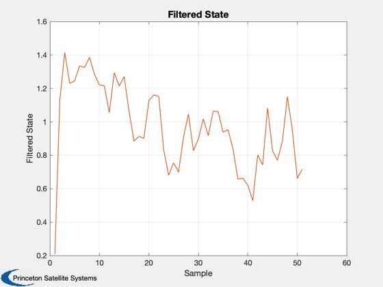
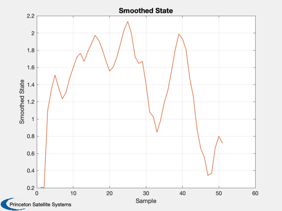
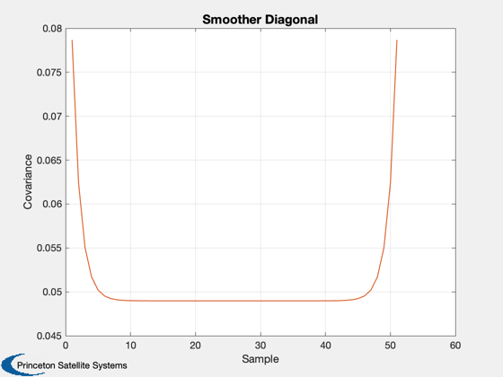
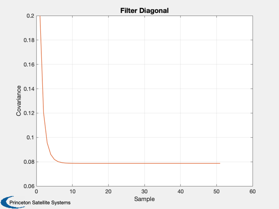
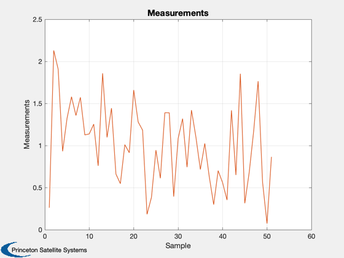

Demonstrate fixed interval smoothing using a Kalman Filter
Since version 1.
-------------------------------------------------------------------------
Reference: Brown, R.G., P.Y.C. Hwang, Introduction to Random Signals
and Applied Kalman Filtering, Second Edition, p.238.
-------------------------------------------------------------------------
See also KSmooth
------------------------------------------------------------------------
Contents
Gauss Markov Process
dT = 0.02;
r = 0.25;
h = 1;
phi = exp(-dT);
q = 1 - exp(-2*dT);
nSamp = 51;
The process
u = randn(1,nSamp);
y = zeros(1,nSamp);
b = sqrt(2)*(1 - phi);
y(1) = u(1);
for k = 2:nSamp
y(k) = phi*y(k-1) + b*u(k);
end
z = y + 0.5*randn(1,nSamp);
Make a higher order system
KSmooth( r, phi, q, h, z, 1 )
z = [z;z];
phi = phi*eye(2);
q = q*eye(2);
h = h*eye(2);
r = r*eye(2);
KSmooth( r, phi, q, h, z, eye(2) )
      